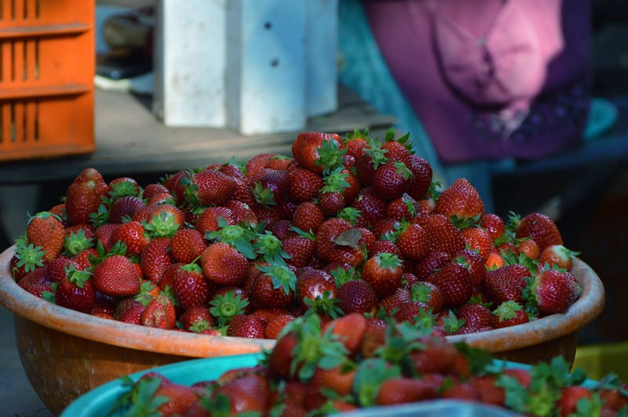

1.LUCKNOW
- Few of the famous places one should visit without fail
Lucknow, a large city in northern India, is the capital of the state of Uttar Pradesh. Toward its center is Rumi Darwaza, a Mughal gateway. Nearby, the 18th-century Bara Imambara shrine has a huge arched hall. Upstairs, Bhool Bhulaiya is a maze of narrow tunnels with city views from its upper balconies.
- Best time to visit: October to March
- Points of interest: Chota Imambara, Rumi Darwaza,Ambedkar Park, Gomti Riverfront Park
2.MANALI

- Sunrise at Manali
One of the most popular hill station destinations in the country has got to be the beautiful town of Manali in the North of India; nestled between the Pir Panjal and Dhauladhars snow capped ranges, the extraordinary beauty of this region has been attracting lakhs of tourist each year. With so much adventure awaiting you here, it is little wonder that the place has adapted to the demands of visitors, resulting in exceptional range of hotels, food and of course activities.
- Best time to visit: October to June
- Points of interest: Solang Valley, Rohtang Pass, Hadimba Temple, Paragliding, Skiing, Vashisht Baths
3.GANGTOK
- Do watch this video 😄😄
The name literally meaning hill-top, Gangtok is one of the most pleasant places to visit in India. Situated in the North East part of the sub-continent, this hill station is a well-known destination for adventure tourism but also offers a lot for the average visitor looking for a national holiday that feels international. With hotels and restaurants catering to tourists, you can be sure to find something within your budget. Local food is inexpensive and absolutely delicious.
- Best time to visit: All year round
- Points of interest: MG Road, Nathu La Pass, Rumtek Monastery, Tsomgo Lake, Kanchenjunga, Reshi Hot Springs and there are many other interesting spots which you can see in th video above.
4.JAIPUR

- The famous Hawa Mahal 😍😍
The largest city in the state of Rajasthan, and the jewel of the sub-continent, Jaipur is a picture of regal beauty and majesty; opulent palaces, magnificent forts and picture perfect lakes make this epic city a tourists paradise. Well known as the Pink City, this flamboyant district is also famous for its mouth-watering cuisine not to mention, handicrafts, museums, shopping and much more.
- Best time to visit:October to March
- Points of interest: Lake Palace, Hawa Mahal, City Palace, Albert Hall Museum, Jaigarh Fort, Bapu Bazar.
5.MOUNT ABU
- Few famous places in Mount Abu...do watch
The cool and lush green surroundings of Mount Abu, Rajasthan only hill station, is abundant in natural as well as man made beauty. Especially famous for the ancient Dilwara Temples built over a thousand years ago, the area is also home to one of the state’s most magnificent water bodies, the Nakki Lake; visit sunset point here or explore the local history and architecture.
- Best time to visit: October to March
- Points of interest: Dilwara Temples, Nakki Lake, Mount Abu Wildlife Sanctuary, Achalgarh Village, Trevors Tank, Sunset point
6.MUNNAR
- The beautiful tea gardens in Munnar
Located on the Mattupetti, Nallathanni and Periavaru river banks, Munnar is a tranquil hill station in the South of India. Known primarily for its beautiful tea gardens, the lush hills of Munnar have become a major tourist destination for its natural beauty, flora and fauna, not to mention the plethora of fun activities and great food too. Trekking, paragliding, rock climbing, safaris and camping are just some of the awesome things to do here.
- Best time to visit: September to May
- Points of interest: Rose Garden, Echo Point,Attukad Waterfalls, Blossom Park, Chinnar Sanctuary
7.GOA
- Must visit these places in goa...😍😍
Rich in Portuguese heritage, blessed with some of best beaches on the planet and also friendly to any budget you may have, is what makes Goa the most popular holiday destination on the Indian West coast. Over a hundred kilometers of shoreline, with pristine blue water, the local food, architecture, culture and people are all very much what makes this place so appealing.
- Best time to visit: October to March
- Points of interest:Calangute Beach, Baga Beach, Water Sports, Basilica of Bom Jesus, Flea Markets
8.MAHABALESHWAR
- A basket of freshly picked strawberries
Mahabaleshwar is famous all over the country for its strawberries. A favorite weekend holiday destination for many Mumbaikars, as well as those from other districts and states, this captivating hill station is also abundant with natural beauty; lush dense forests, waterfalls, rolling hills and splendid valleys makes for a great getaway from the city. Visit during strawberry season, starting October and April, to get a taste of the amazing local produce.
- Best time to visit: October to June
- Points of interest:Elephant’s Head point, Chinaman’s falls, Arthur’s seat, Panchgani, Venna Lake, Wilson Point
9.BANGALORE
- Top 10 places to visit in bangalore
Best known as the Garden City of India, the country’s very own Silicon Valley has evolved into a bustling metropolis with no end to the restaurants, pubs, clubs, parks, shopping centers dotting the entire city. Bangalore is easy to get with good access by air, road and rail. The local parks and gardens are well maintained and offer you real sense of being amongst nature right in the heart of the city.
- Best time to visit: All year round
- Points of interest: Bangalore Palace, Cubbon Park, Wonder La Water Park, Bannerghatta National Park, ISKCON Temple
10.KOLKATA
- Kolkata is a great blend of old world charm and a bustling city
The second largest city in the country, Kolkata is a 350 year old metropolis and the capital of the West Bengal region, the city is famous for its culture, art, music and literature. With dozens of festivals held each year, the city is always in some celebratory mood which is amazing for visitors. Apart from being the intellectual center of India, Kolkata is also famous for its delicious cuisine, colonial architecture and manicured parks.
- Best time to visit: All year round
- Points of interest: Victoria Memorial, Fort William, Howrah Bridge, Belur Math, Birla Planetarium, Indian Museum